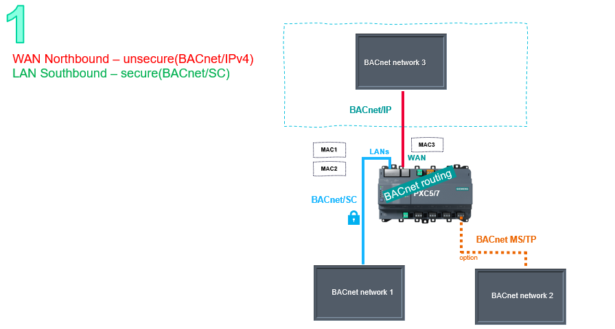

场景 1：不同以太网端口上的两个 BACnet 网络
BACnet 网络在逻辑上路由并在物理上分离。 BACnet 路由只能在以太网端口之间进行：WAN 上的 /IP 和 LAN 上的 /SC，将安全 (BACnet 网络 1) 与不安全 BACnet 流量 (BACnet 网络 3) 分开。
Configure flexible ports


WAN 端口具有未加密的 BACnet/IP 流量，不适用于外部网络访问。
BACnet 网络在逻辑上路由并在物理上分离。 BACnet 路由只能在以太网端口之间进行：WAN 上的 /IP 和 LAN 上的 /SC，将安全 (BACnet 网络 1) 与不安全 BACnet 流量 (BACnet 网络 3) 分开。
Configure flexible ports

WAN 端口具有未加密的 BACnet/IP 流量，不适用于外部网络访问。